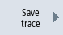

There are two options of saving a trace session:
-
Variables and settings: Only the variables and the settings are saved.
-
Variables, settings and recorded values: The variables, settings and the recorded values are saved.
|
Note
|
Save option
If you have activated the "Save file in both formats" checkbox at "Trace" → "Options", the session file is saved as a csv file in addition to xml format.
|
Procedure
 | 1. | You have edited an active trace session. |
|  | 2. | Press the "Store trace" softkey. The "Save Trace: Session ... " window opens and offers the following storage options. |
 | 3. | Activate the corresponding checkbox and press the "OK" softkey. The "Store Trace" window opens and specifies the file name in the "Name of trace file:" entry field. The file format is automatically specified as ".xml" and cannot be changed. |
| | 4. | Press the "OK" softkey to save the session file. If the session file already exists, then you obtain a corresponding confirmation prompt. |
| | 5. | Press the "OK" softkey if you wish to overwrite the existing session file. |
| | | - OR - |
| | | Press the "Save as" softkey if you do not wish to overwrite the existing session file. A new name is suggested but you can specify a name yourself. |
| | | - OR - |
| | | Press the "Change directory" softkey if you wish to store the session file in a directory other than in the standard "Trace" directory. The data tree opens and you can select between the configured drives. |
 | | Press the "New directory" softkey if you wish to create a new directory. The "New Directory" window opens in which you can assign a directory name. |
| | | Press the "OK" softkey. The "Store Trace" window opens in which the names of the target directory and the session file are displayed. You can change the name of the session file. |
| | 6. | To save the session file, press the "OK" softkey one more time. |
| | | - OR - |
| | | If the session file with this name already exists, then you obtain a corresponding confirmation prompt. |